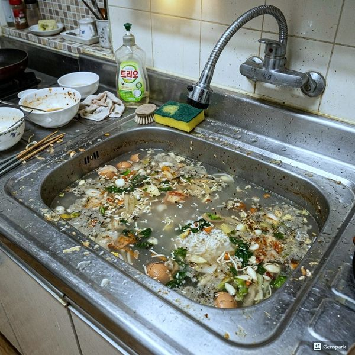
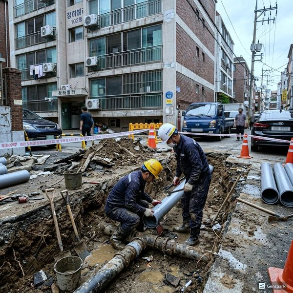
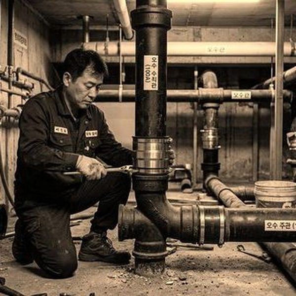

주요 배관 자재별 특징과 장단점
배관 교체 시 가장 많이 사용되는 자재는 PVC, 스테인리스, PE(폴리에틸렌)관입니다. PVC 배관은 가격이 저렴하고 시공이 쉬우며 내화학성이 좋아 배수관에 주로 사용됩니다. 수명은 25~30년이며, 열에 약한 것이 단점입니다. 스테인리스 배관은 내식성과 내구성이 뛰어나 급수관에 적합하며, 수명은 40년 이상입니다. 가격이 높지만 장기적으로는 경제적입니다. PE관은 유연성이 뛰어나 지하 매설에 적합하고, 동파에 강합니다. 수명은 50년 이상이지만 자외선에 약해 노출 시공은 피해야 합니다.

상황별 최적의 배관 자재 선택
급수관 교체라면 스테인리스 배관을 추천합니다. 초기 비용이 높지만 녹물 걱정 없이 40년 이상 사용할 수 있습니다. 배수관은 PVC가 가장 보편적이며, 내경이 넓어 막힘 발생률이 적습니다. 지하 매설 급수관은 PE관이 최적입니다. 동파에 강하고 이음매가 적어 누수 위험이 낮습니다. 아파트 전체 배관 교체를 계획한다면 급수는 스테인리스, 배수는 PVC, 옥외 매설은 PE관으로 조합하는 것이 가장 합리적입니다. 제우스시설관리는 현장 상황에 맞는 최적의 자재를 제안하며, 투명한 견적으로 신뢰를 드립니다.

자주 묻는 질문
Q. 동파이프(구리배관)는 좋지 않나요?
A. 동파이프는 내식성이 우수하지만 가격이 매우 비싸고, 물의 pH에 따라 녹청이 발생할 수 있어 최근에는 스테인리스로 대체되는 추세입니다.
Q. 배관 교체 시 자재를 직접 구입해도 되나요?
A. 가능하지만, 규격과 품질 확인이 중요합니다. 제우스시설관리는 검증된 자재를 적정 가격에 공급하며, 자재 보증도 제공합니다.